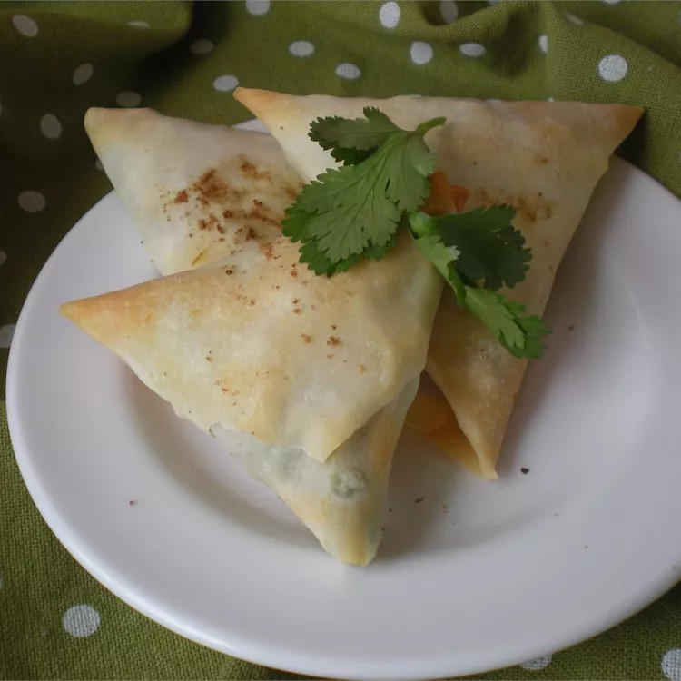

Veggie Samosas

Description
Quick vegetarian samosas with a curried garbanzo bean filling. You can adjust the amount of curry paste according to your taste.
Ingredients
- 1 tablespoon vegetable oil
- ½ cup chopped onion
- 3 (19 ounce) cans garbanzo beans, drained
- 2 tablespoons curry paste
- ½ cup apple juice
- 3 sheets frozen puff pastry, thawed
- ¼ cup all-purpose flour for dusting
Steps
- Preheat oven to 350 degrees F (175 degrees C).
- Heat oil in a large skillet over medium-high heat. Saute onion until browned, about 5 minutes. Reduce heat and add garbanzo beans. Mix curry paste with apple juice until smooth, then add to skillet. Simmer mixture 10 minutes, stirring occasionally and adding more apple juice or water as needed to keep mixture moist.
- Cut each sheet of pastry into 3 equal-size rectangles, then cut each rectangle in half. (You will have 18 pieces total.) Dust a clean, flat surface lightly with flour, and roll each piece of pastry until it is double in size. Dust pastry with flour as needed, to prevent it from sticking to rolling pin. Spoon an equal amount of filling into center of each pastry square. Fold in half and press edges to seal. Place on nonstick baking sheets.
- Bake in preheated oven for 25 minutes, until golden brown.
Home Page